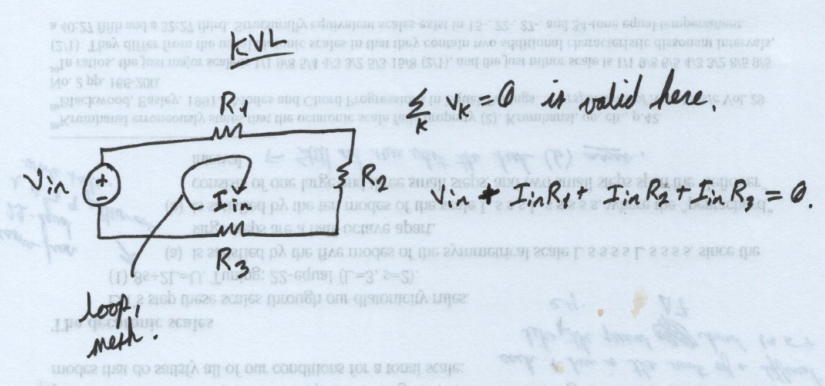
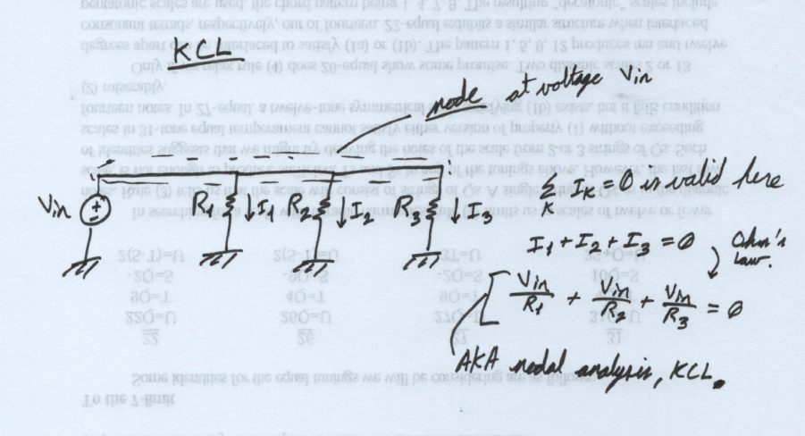

Analog Circuits

Lesson 7: KVL and KCL
KVL - Kirchoff's Voltage Law
Derivation
You can derive this from electromagnetism, too. KVL follows directly from assuming
\( \nabla \times \textbf{E} = -\frac{\partial B}{\partial t} = 0 \)
from Faraday's Law. Then we can use the definition of voltage,
\( V = \int \mathbf{E} \cdot d\mathbf{l} \),
apply the condition from Faraday's Law, and take a sum over multiple elements in a closed loop. You end up with
\( \sum_{k} V_k = 0 \).
This says that the sum of the voltage drops around any closed loop must equal zero.
Usually, you're looking for either a voltage or a current in a closed loop. If it's in a closed loop, you apply KVL. Full stop. The only time you wouldn't want to do this is if the loop is connected to some other loop through one of its elements.
Naming
We use "KVL", "loop analysis", and "mesh analysis" interchangeably. These terms all mean the same thing. They might not mean the same thing for 3D circuits, but who the heck builds 3D circuits?
KCL - Kirchoff's Current Law
I'll skip the derivation here, because the math is more complicated than in the derivation for KVL. Suffice it to say that a similar line of reasoning about nodes (connection points between circuit elements) results in
\( \sum_{k} I_k = 0 \).
Naming
"Nodal analysis" and "modified nodal analysis" both refer to using KCL with Ohm's Law. They're all fundamentally KCL anyway, so it's safe to say we can use these three terms interchangeably.
When do you use one over the other?
This choice depends on experience and personal preference. As a starting point, you can count the number of nodes in the circuit, put that number off to the side, and count the number of loops in the circuit. Compare them. The smaller number tells you which method might be easier than the other. If the loops have the smaller number, KVL might be a good choice. If the nodes have a smaller number, KCL might be a good choice. This is a contrived method, but it gives you a bit of insight into what we're looking for.
In short: Fewer equations \( \rightarrow \) better, and more equations \( \rightarrow \) worse.
Bottom line. \( \sum_{k} V_k = 0 \) around a closed loop. \( \sum_{k} I_k = 0 \) into/out of any node. Use the one that gives you fewer equations.